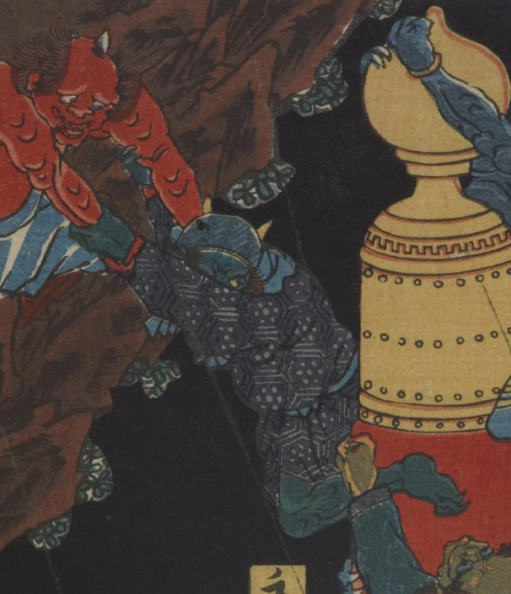

鬼；オニ

深緑色の肌の鬼。宝珠柱から岩場に逃げようとしているようにみえる。角が2本生えている。頭巾をかぶっている。紺色亀甲柄の着物をまとっている。
著作者：一栄斎芳艶（歌川芳艶）／出典：親書誌：U426_nichibunken_0084：大江山酒呑退治；オオエヤマシュテンタイジ／日付：2006／資源識別子：U426_nichibunken_0084_0003_0000
Copyright (c)2010- International Research Center for Japanese Studies, Kyoto, Japan. All rights reserved.